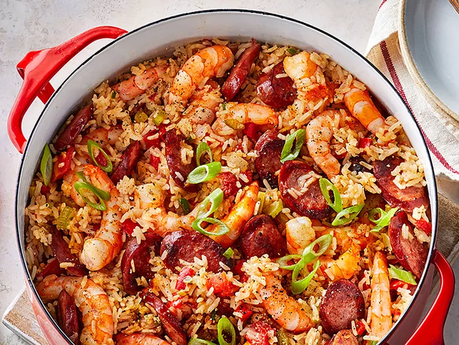

Shrimp and Smoked Sausage Jambalaya

Description
Here, a medley of sweet and spicy flavors comes together in this classic Cajun dish.
Ingredients
- 1 tablespoon olive oil
- 1 (12 ounce) package Hillshire Farm® Rope Smoked Sausage, cut in 1/2" bias-cut slices
- 2 cups chopped yellow onion
- 1 cup chopped celery
- 1 cup chopped red bell pepper
- 2 tablespoons minced garlic
- 1 jalapeno pepper, seeded and minced
- 2 cups uncooked jasmine rice
- 3 cups unsalted chicken stock
- 1 (14.5 ounce) can diced tomatoes, drained
- 1 ½ teaspoons kosher salt
- ½ teaspoon cayenne pepper
- 1 pound large shrimp, peeled and deveined
- ½ cup thinly sliced scallions, plus more for garnish
- 2 tablespoons fresh lemon juice
Steps
- Heat oil in a large Dutch oven over medium-high.
Add sausage; cook about 6 minutes, stirring occasionally, until lightly browned.
Add onion, celery, bell pepper, garlic, and jalapeno.
Cook 5-6 minutes, stirring frequently, until vegetables are softened.
Add rice and cook, stirring constantly, 30 seconds.
- Add stock, tomatoes, salt, and cayenne pepper.
Bring to a boil; cover, reduce heat to medium-low, and simmer until rice is just tender, 10 minutes.
Add shrimp, cover, and cook until shrimp turn pink, about 4 minutes.
Remove from heat. Stir in scallions and lemon juice. Garnish with additional scallions.